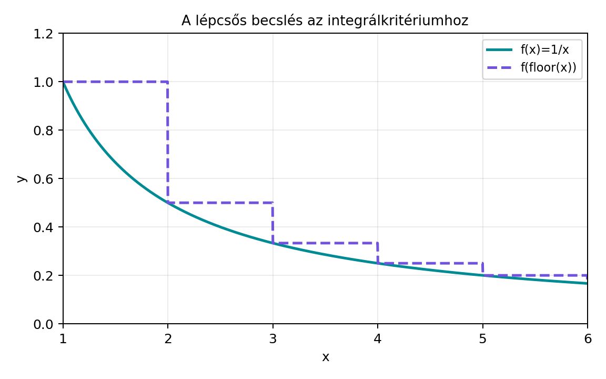

A pozitív tagú sorokról szóló fejezetben láttuk, hogy a
sor konvergenciájának eldöntése fontos, de a hányados- és gyökkritérium
erre a sorcsaládra éppen nem ad választ: a hányadoskritérium határértéke
.
Az integrálszámítás viszont természetes kapcsolatot teremt a sorok és a
görbe alatti terület között, mert a sor tagjait téglalapok területeként
foghatjuk fel. Ez a kapcsolat nemcsak a
kérdést zárja le, hanem a maradékösszegek becslésére is használható
eszközt ad.
16.3.2 Szemléletes kép: téglalapok
és a görbe alatti terület
Tekintsük az
függvényt az
intervallumon. Ha az
intervallum fölé rajzolunk egy-egy téglalapot, amelynek magassága
vagy
,
akkor a monoton csökkenő függvény miatt a téglalapok területei
közrefogják az integrált.

A lépcsős becslés az integrálkritériumhoz
- A folytonos görbe az
,
a lépcsős görbe az $f(\lfloor x\rfloor )=1/\lfloor x\rfloor $ felső
közelítés. A téglalapok területe a
részletösszeg, a görbe alatti terület az integrál.
Az ábrán a szaggatott lépcsős függvény minden
intervallumon a
értéket veszi fel, tehát a lépcső alatti terület az
intervallumon
.
A folytonos görbe alatti terület
.
Az ábráról leolvasható, hogy a lépcsős függvény a görbe fölött halad,
ezért
,
ami már sejteti a harmonikus sor divergenciáját.
Az alábbi ábra a bizonyítás kulcsát, a kétoldali becslést is mutatja:
a felső lépcső
(
az
-en)
a görbe fölött, az alsó
()
alatta halad, így
.
A jobb panel ugyanezt a maradékösszegre alkalmazza:
.
Statikus változat (mint a PDF-ben)
Az integrálkritérium lépcsős becslése
(,
:
)
és a maradékösszeg korlátai
(,
:
)
16.3.3 Az integrálkritérium
Az általános tétel a következő.
Tétel (integrálkritérium). Legyen
pozitív egész, és tegyük fel, hogy az
függvény folytonos és monoton csökkenő. Ekkor a
sor és az
improprius integrál egyszerre konvergens vagy
divergens.
Bizonyítási terv. A monoton csökkenés miatt minden
intervallumon a függvény értéke
és
közé esik, így egy téglalappal alulról és felülről becsülhetjük az
integrált. Az egyenlőtlenségeket összegezve a részletösszegek és az
integrálok közötti kapcsolatot kapjuk, amelyből a konvergencia
ekvivalenciája következik.
Bizonyítás. Mivel
monoton csökkenő, minden
és minden
esetén
Integráljuk ezt az egyenlőtlenséget
szerint
-től
-ig:
A két szélső integrálban a konstans szorzó kiemelhető, az intervallum
hossza
,
ezért
Ez a kulcsegyenlőtlenség; a továbbiakban (1)-ként hivatkozunk rá.
Most összegezzük
-től
-ig,
ahol
egész:
A bal oldal átrendezhető:
.
Jelölje
a részletösszeget. Ekkor
Erre az egyenlőtlenségláncra a továbbiakban (2)-ként hivatkozunk.
A bal oldali egyenlőtlenségből
,
mert
.
Ha tehát az integrál konvergens, az
részletösszegek felülről korlátosak; nemnegatív tagok miatt monoton
növekvők, így a monoton korlátos sorozatok tétele szerint konvergensek.
Tehát a sor konvergens.
Megfordítva, a jobb oldali egyenlőtlenségből
.
Ha a sor konvergens, az
függvény monoton növekvő és (minden
-re)
felülről korlátos, tehát az improprius integrál konvergens. Ezzel az
állítást beláttuk. ∎
16.3.4 A
sor teljes lezárása
Alkalmazzuk az integrálkritériumot a klasszikus sorra.
Következmény. A
sor pontosan akkor konvergens, ha
.
Bizonyítás. Ha
,
akkor az általános tag
nem tart nullához, így a sor biztosan divergens a nullához tartás
szükséges feltétele miatt. Legyen most
.
Az
függvény az
intervallumon pozitív, folytonos és monoton csökkenő, mert a deriváltja
.
Az integrálkritérium szerint a sor és az
integrál egyszerre konvergens. Ezt az improprius integrált az előző
alfejezetben már kiszámoltuk: ha
,
akkor
tehát a harmonikus sor divergens. Ha
,
akkor
Ez a határérték pontosan akkor véges, ha
,
azaz
.
Ezzel az állítást beláttuk. ∎
Példa (divergens sor az integrálkritériummal).
Döntsük el a
sor konvergenciáját.
Megoldás. Az
függvény az
intervallumon pozitív, folytonos és monoton csökkenő, mert a nevező
mindkét tényezője növekvő. Az integrálkritériumot alkalmazzuk:
Helyettesítsünk
változót, ekkor
,
és
Így
tehát a sor divergens. ∎
16.3.5 A maradékösszeg
becslése
Az integrálkritérium bizonyításában szereplő (2) egyenlőtlenségből a
konvergens sor maradékösszegére is pontos becslést kaphatunk.
Tétel (maradékösszeg becslése). Legyen
folytonos, monoton csökkenő, és tegyük fel, hogy a
sor konvergens. Jelölje a maradékösszeget
Ekkor
Bizonyítás. Az (1) egyenlőtlenséget összegezzük
-től
-ig:
A bal oldal
,
a jobb oldal pedig a maradékösszeg
-ig
vett közelítése. Határátmenettel
esetén
Ebből az alsó becslés következik. A felső becsléshez hasonlóan az (1)
egyenlőtlenséget
-től
-ig
összegezve és határátmenetet véve:
Ezzel a tételt beláttuk. ∎
A maradékösszeg becslése azért hasznos, mert a sor összegét
alakban írhatjuk, és a maradékot az integrállal tudjuk korlátozni.
16.3.6 Kidolgozott példa: hány tag
kell a
közelítéséhez?
Az Euler által vizsgált klasszikus sor
Ennek bizonyítását a Fourier-soroknál adjuk majd meg, itt most az
integrálkritériummal azt vizsgáljuk, hány tagot kell összeadnunk ahhoz,
hogy a részletösszeg adott pontossággal közelítse a sor összegét.
Tegyük fel, hogy a hibának legfeljebb
-nak
szabad lennie. Az
függvényre alkalmazzuk a maradékösszeg becslését:
Ahhoz, hogy
teljesüljön, elegendő, ha
,
azaz
.
Tehát legalább
tagot kell összegezni. Az alsó becslés szerint
,
ezért
esetén a hiba valóban
nagyságrendű, de nem sokkal kisebb. Ez jól mutatja, hogy a
sor konvergens ugyan, de viszonylag lassan: a milliós részletösszeg már
hat tizedes pontosságot ad, de tíz tizedeshez már
tagra lenne szükség.
Ellenőrzés. Ha
,
akkor a maradék felső becslése
.
A pontos maradék nagyságrendje az alsó becslés szerint legalább
,
tehát a hiba ténylegesen
körüli. Ez összhangban van azzal az ismert ténnyel, hogy a
sor maradékösszege aszimptotikusan
.
16.3.7 A harmonikus sor
részletösszege és az Euler–Mascheroni-állandó
A harmonikus sor divergens, de a részletösszegei nagyon lassan nőnek.
Az integrálkritérium lépcsős becslésével pontos aszimptotikát
adhatunk.
Legyen
Az
függvényre az (1) egyenlőtlenség:
Összegezzük
-től
-ig:
A bal oldal
,
a jobb oldal
.
Ebből
azaz
Tehát a
sorozat korlátos. Megmutatható, hogy monoton csökkenő is, mert
hiszen az
()
egyenlőtlenség
-re
.
(Az egyenlőtlenség igazolása:
,
,
.)
Így a sorozat szigorúan monoton csökkenő. A monoton korlátos sorozatok
tétele szerint konvergens.
Definíció (Euler–Mascheroni-állandó). A
határértéket Euler–Mascheroni-állandónak nevezzük. Közelítő
értéke
Tehát nagy
-re
pontosabban
.
Ez a képlet a harmonikus sor részletösszegeinek aszimptotikus
viselkedését írja le, és azt is mutatja, hogy a harmonikus sor bár
divergens, a részletösszegei logaritmikus sebességgel nőnek.
A
állandót tetszőleges pontossággal ki tudjuk számítani, de nem ismerünk
rá zárt alakú képletet, és máig nyitott kérdés, hogy racionális vagy
irracionális-e. Ez a nyitott kérdés jól mutatja, hogy az analízis
alapfogalmai is vezethetnek mély, megoldatlan problémákhoz.
16.3.8 A Gamma-függvény: a
faktoriális általánosítása
A faktoriális fogalma pozitív egész számokra értelmezett:
.
Felmerül a kérdés: lehet-e értelmesen definiálni például a
értéket? Az integrálszámítás erre ad egy elegáns választ.
Definíció (Gamma-függvény). Minden
valós számra legyen
Ez az integrál improprius mind a
,
mind a
miatt. Megmutatható, hogy
esetén konvergens: a
közelében
,
ami
esetén integrálható, a végtelenben pedig az
tényező exponenciálisan lecseng, így az integrál ott is konvergens.
Tétel (a Gamma-függvény funkcionális egyenlete).
Minden
esetén
Bizonyítás. Írjuk fel a definíciót
-re,
és alkalmazzunk parciális integrálást:
Legyen
és
,
ekkor
és
.
A parciális integrálás formulája szerint
A kiintegrált rész határértéke
,
mert
mind a
-ban,
mind a végtelenben
().
A megmaradt integrál éppen
,
tehát
Ez a Gamma-függvény funkcionális egyenlete; a továbbiakban (3)-ként
hivatkozunk rá.
∎
Következmény.
,
és minden pozitív egész
esetén
Bizonyítás. A definícióból
A (3) rekurziót alkalmazva:
∎
A Gamma-függvény tehát a faktoriális folytonos (sőt analitikus)
kiterjesztése. Érdemes megjegyezni, hogy az indexelés miatt
,
nem pedig
.
Ez egy gyakori félreértés.
A Gamma-függvény egyik legismertebb nevezetes értéke:
Tétel (a Gamma-függvény az
helyen).
Ennek bizonyítását a kettős integráloknál adjuk meg, a Polárkoordináták és a Gauss-integrál alfejezetben.
Itt most kimondjuk, és felhasználjuk arra, hogy a faktoriális
általánosítása fél egészekre is működik: például a rekurzióval
A Gamma-függvényre a későbbiekben több helyen is szükségünk lesz: a
Laplace-transzformációnál az
transzformáltak számításakor, valamint a kettős integráloknál a
Gauss-integrál kapcsán.
16.3.9 A Stirling-formula
A faktoriális nagy értékeinek közelítésére az analízis egyik
leghíresebb formulája szolgál.
Tétel (Stirling-formula). A faktoriálisra érvényes
az
aszimptotikus egyenlőség, azaz
A Stirling-formula bizonyításához a Gamma-függvény aszimptotikus
viselkedését kell vizsgálni, ami meghaladja ennek az alfejezetnek a
kereteit, de a formula maga rendkívül hasznos például
valószínűségszámítási és kombinatorikai becslésekben. A formula szerint
nagyságrendje durván
-nel
arányos, ami például a hányadoskritérium használatakor is hasznos.
16.3.10 Számolási recept: sor
konvergenciájának eldöntése integrálkritériummal
Ellenőrizd a feltételeket: a sor tagja
alakú, ahol
pozitív, folytonos és monoton csökkenő valamilyen
indextől kezdve. Ha nem, az integrálkritérium nem alkalmazható.
Írd fel a megfelelő improprius integrált:
.
Számítsd ki az integrált primitív függvény
segítségével, vagy döntsd el a konvergenciáját összehasonlítással.
Vond le a következtetést: ha az integrál
konvergens, a sor is konvergens; ha az integrál divergens, a sor is
divergens.
Konvergens sor esetén becsüld a maradékösszeget a
egyenlőtlenséggel.
16.3.11 Valós életbeli alkalmazás:
adatfeldolgozási idő becslése
Egy adatelemző egy nagy adathalmaz feldolgozásakor a hibát a
sor összegével modellezi, amelynek pontos értékére nincs zárt alakú
formulája. A futási idő szempontjából fontos tudnia, hány tagot kell
összegeznie ahhoz, hogy a modellhiba
alá csökkenjen.
A maradékösszeg becslését alkalmazzuk az
függvényre. Ekkor
Tehát
.
Ahhoz, hogy
legyen, elegendő, ha
azaz
,
tehát
.
Ezért már
tag összeadása is elegendő a kívánt pontossághoz. A felső becslés
szerint
;
az alsó becslés
pedig azt mutatja, hogy a hiba nem sokkal kisebb a küszöbnél. A modell
szempontjából ez azt jelenti, hogy a számítás gyorsan konvergál: nem
kell milliónyi tagot összegezni, mert a
sor maradéka sokkal gyorsabban csökken, mint a
soré.
A modell korlátai: ez a becslés csak akkor érvényes,
ha a sor valóban
alakú és pozitív tagú. Ha a modellben a hibatagok előjelet váltanak,
akkor más becslésre van szükség. A számítás azt is feltételezi, hogy az
összegzést a sor elejétől kezdjük; ha a tagokat más sorrendben adjuk
össze, a kerekítési hibák viselkedése megváltozhat.
16.3.12 Tipikus hibák
Az integrálkritérium alkalmazása nem monoton
függvényre. Az integrálkritérium feltételezi, hogy
monoton csökkenő. Például az
függvény pozitív és folytonos, az integrálja divergens (a
átlaga
),
de a sor tagjai
,
tehát a sor konvergens. Ha a monotonitást nem ellenőrizzük, téves
következtetésre juthatunk.
A Gamma-függvény indexelésének eltévesztése. A
helyes képlet
,
ezért
;
például
,
nem
.
Ellenőrzésként:
és
.
A harmonikus sor konvergensnek vélése a lassú növekedés
miatt. Mivel
,
a részletösszegek lassan nőnek, és könnyű azt hinni, hogy konvergálnak.
A logaritmus azonban végtelenbe tart, így a harmonikus sor
divergens.
A maradékösszeg becslés határainak felcserélése. A
helyes egyenlőtlenség
.
Ha valaki a felső becslésben is
-et
használ, alábecsüli a hibát. A levezetésből látszik, hogy a felső
becslés az
-től
kezdődő téglalapokból adódik.
16.3.13 Önellenőrzés
Igaz-e, hogy ha
folytonos, pozitív és monoton csökkenő
-en,
akkor
és
egyszerre konvergensek? Válaszold meg, és indokold röviden.
Konvergens-e a
sor? Használd az integrálkritériumot.
Mennyi a
értéke a Gamma-függvény definíciója alapján?
Mit állít a Stirling-formula a faktoriálisra?
Ha a
konvergens sorra
típusú becslést használunk, és a maradék felső becslése
,
hány tagot kell legalább összeadnunk, ha
?
16.3.14 Feladatok
1. feladat (A). Az integrálkritériummal döntsd el a
sor konvergenciáját. Számítsd ki a megfelelő improprius integrált.
2. feladat (A). Számítsd ki
-öt
a Gamma-függvény definíciója és a funkcionális egyenlet segítségével,
majd ellenőrizd, hogy
.
3. feladat (B). A
sorra add meg a maradékösszeg alsó és felső becslését
-től.
Határozd meg azt a legkisebb
-et,
amelyre a hiba biztosan kisebb
-nál.
4. feladat (B). Bizonyítsd be, hogy a
sorozat monoton csökkenő, felhasználva az
egyenlőtlenséget
esetén.
5. feladat (C). Az integrálkritérium bizonyításában
hol használjuk ki, hogy
monoton csökkenő? Adj példát olyan pozitív, folytonos
-re,
amelyre a sor és az integrál nem egyszerre konvergens.
6. feladat (D). Egy fizikus a
sor összegét szeretné
pontossággal közelíteni. Hány tagot kell összegeznie? Használd a
maradékösszeg becslését, és értelmezd az eredményt a gyakorlatban.
16.3.15 Megoldások
16.3.15.1 Önellenőrzés –
válaszok
Igen, ez pontosan az integrálkritérium állítása.
Konvergens, mert
.
.
.
Ha
és a felső becslés
,
akkor
,
tehát
,
tehát legalább
tagot kell összeadni.
16.3.15.2 1. feladat megoldása
Az
függvény pozitív, folytonos és monoton csökkenő
-en.
Helyettesítéssel
,
:
Így
Az integrál konvergens, tehát a sor is konvergens az
integrálkritérium szerint.
16.3.15.3 2. feladat megoldása
A definícióból
.
A funkcionális egyenletet ismételve:
16.3.15.4 3. feladat megoldása
Az
függvényre
Ezért
A
hibához a felső becslésből
,
azaz
,
tehát
,
így
.
A felső becslés szerint
;
az alsó becslés szerint a hiba legalább
,
tehát közel van a küszöbhöz. (A becslés
-at
garantálja; a pontos maradékból
is elég.)
16.3.15.5 4. feladat megoldása
Legyen
.
Ekkor
Az
egyenlőtlenséget
-re
alkalmazva:
Ezért
tehát a sorozat szigorúan monoton csökkenő. Korlátosságát az
alfejezetben láttuk, így konvergens.
16.3.15.6 5. feladat megoldása
A monoton csökkenés az (1) egyenlőtlenségben jelenik meg: ha
nem monoton csökkenő, akkor az
becslés nem érvényes. Ellenpélda: legyen
.
Ez a függvény pozitív és folytonos, de nem monoton csökkenő. A sor
tagjai
,
tehát
konvergens. Az integrál azonban
ahol az első integrál konvergens, de a második divergens, mert
periódusonkénti átlaga
.
Így a sor konvergens, az integrál divergens, tehát az integrálkritérium
monotonitás nélkül nem igaz.
16.3.15.7 6. feladat megoldása
Az
függvényre
A feltétel
,
ehhez elegendő
,
azaz
,
tehát
.
Ezért
tag összeadása már garantálja a kívánt pontosságot. A felső becslés
szerint
;
az alsó becslés szerint a hiba legalább
,
tehát közel van a küszöbhöz. Ez azt mutatja, hogy a
sor már igen gyorsan konvergál.
16.3.16 Rövid összefoglaló
Az integrálkritérium szerint ha
folytonos és monoton csökkenő, akkor a
sor és az
improprius integrál egyszerre konvergens vagy divergens. A bizonyítás
kulcsa az
lépcsős becslés. Ebből következik, hogy a
sor pontosan
esetén konvergens. A konvergens sorok maradékösszegére érvényes
.
A harmonikus sor részletösszegére
,
ahol
az Euler–Mascheroni-állandó. A Gamma-függvény
,
amelyre
,
ezért
.
Nevezetes értéke
,
a Stirling-formula pedig
.
Továbbvitt eredmények: az integrálkritériumot a
hatványsorok gyakorlati alkalmazásainál használjuk (Hatványsorok a gyakorlatban: numerikus számítás,
közelítés, generátorfüggvények); a Gamma-függvény a kettős
integrálnál, a Gauss-integrál kapcsán (Polárkoordináták és a Gauss-integrál) és a
Laplace-transzformációnál (A
Laplace-transzformáció) jelenik meg; a
pontos bizonyítását a Fourier-soroknál adjuk (Parseval-egyenlőség és a Fourier-sorok
alkalmazásai).